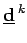
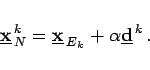
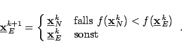

Dieses Verfahren gleicht dem Gradientenverfahren aus Verfahren des steilsten Abstiegs mit dem Unterschied, daß die Richtung  ein normalverteilter Zufallsvektor ist.
In der Generation k wird aus einem Elternpunkt durch Addition einer normalverteilten Variation ein Nachkomme ermittelt gemäß:
|  | (18.87) |
Der Faktor  ist ein Parameter zur Steuerung der Schrittweite über den die Konvergenzgeschwindigkeit beeinflußt werden kann.
ist ein Parameter zur Steuerung der Schrittweite über den die Konvergenzgeschwindigkeit beeinflußt werden kann.
Der Punkt mit dem kleineren Zielfunktionswert wird zum Elternpunkt der nächsten generation k +1:
|  | (18.88) |
Das Verfahren wird beendet, wenn über eine bestimmte Anzahl von Generationen kein besserer Nachkomme mehr ermittelt wird. Die Schrittweite  kann vergrößert werden, wenn die Mutation häufig zu zu einem verbesserten Nachkommen führt. Bei geringer erfolgsrate ist
kann vergrößert werden, wenn die Mutation häufig zu zu einem verbesserten Nachkommen führt. Bei geringer erfolgsrate ist  zu verkleinern.
zu verkleinern.